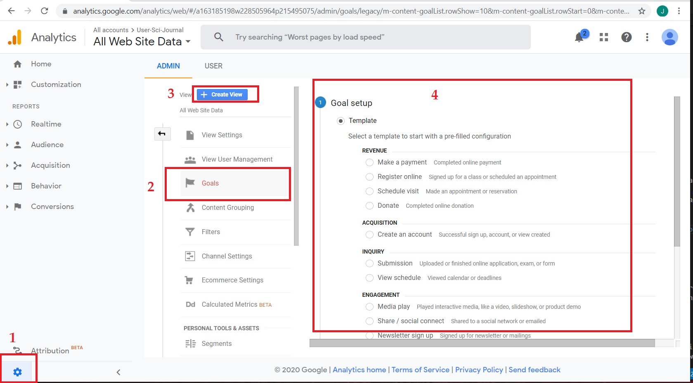
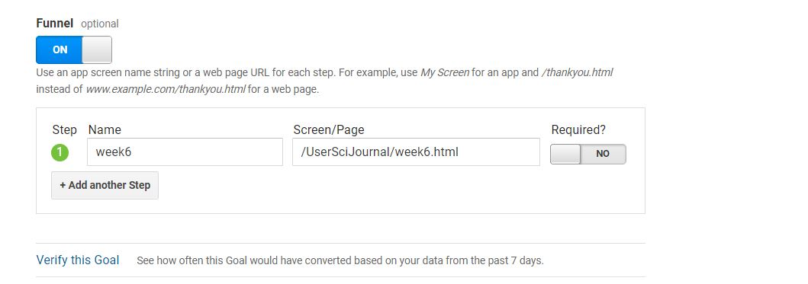

Introduction
This week we examine Goals tracking functionality within Google Analytics. Once google analytics is set up on your page, google lets you set goals for user interaction with your site. Examples of goals could be users being directed to a certain page, spending a certain amount of time on a certain page or played embedded media content.
Goals and Funnels
Goal
For this blog, I am creating a destination goal. A destination goal is met when a user is directed to a certain destination on your website. The destination I am tracking is whether users click a button to take them to a second page which shows accessible color combinations. In week 6, we made accessibility improvements to our Blogs with one of the improvements being fixing contrast errors between text and their backgrounds. I have since gone back and edited week 6's article to include a link to a page that shows other acceptible font colors for white backgrounds. The user is directed to this page with a large orange button.
Funnel
In addition to setting up goal tracking, I created a funnel to visualize user's path from the week 6 article to the color scheme page.Setting up a goals and funnels in Google Analytics
Goals
The process for setting up a goal in google analytics is relatively user friendly. From the Admin Menu, select goals, then "create new goal". This will bring you to a goal configuration menu. From here, follow Google's instructions on how to create a new goal. Note: your goal may require you to create an "event" first. The goal I created here will not require this.
Funnels
To create a funnel visualization, from the goal details page, select "yes" on the slider button under funnel. From there, Google will ask you to identify each step in the user path that you'd like ot measure. In this case, there is only one step prior to the destination. So in my case, the funnel is /week6.html and the destination is /colors.html.

Summary
With these tools in place, we'll be able to measure goals (converstions) and visualize the path users took to get to the destination, including % of users who dropped before arriving at the goal.